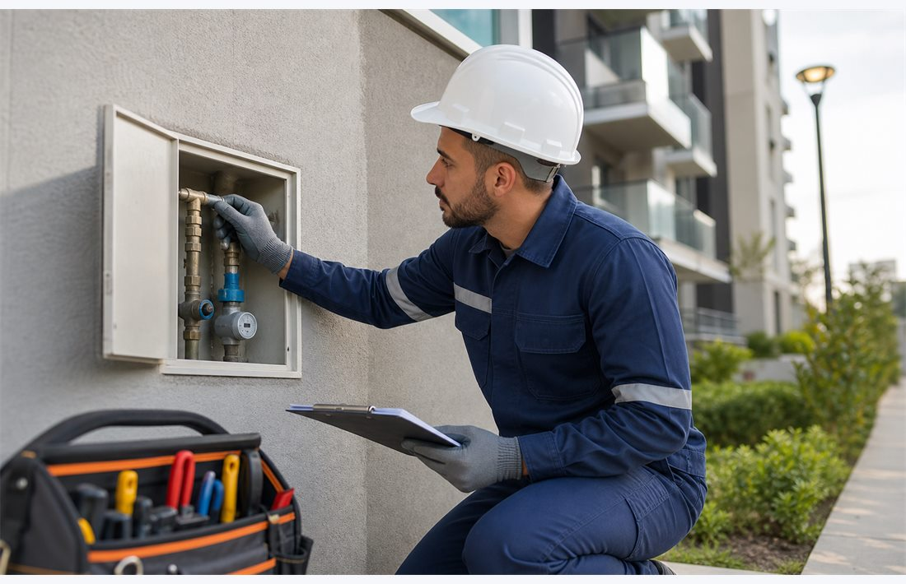
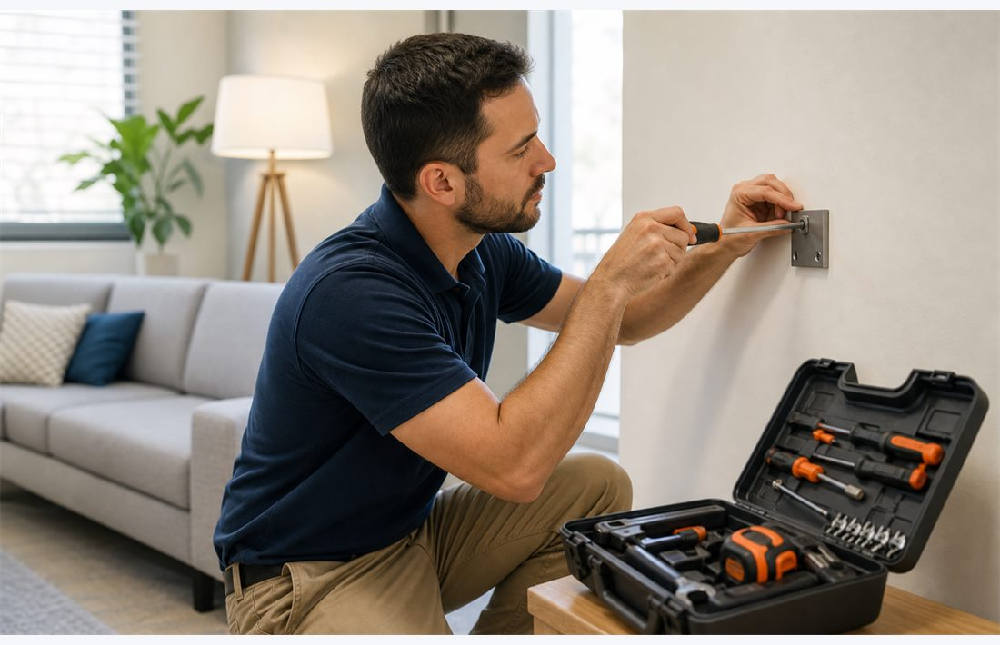
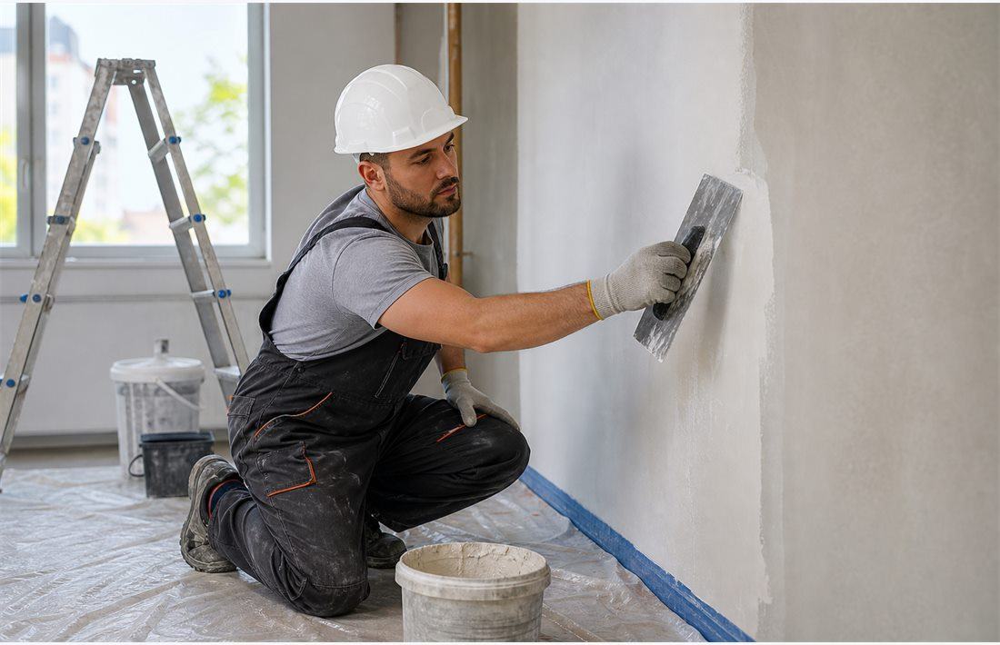
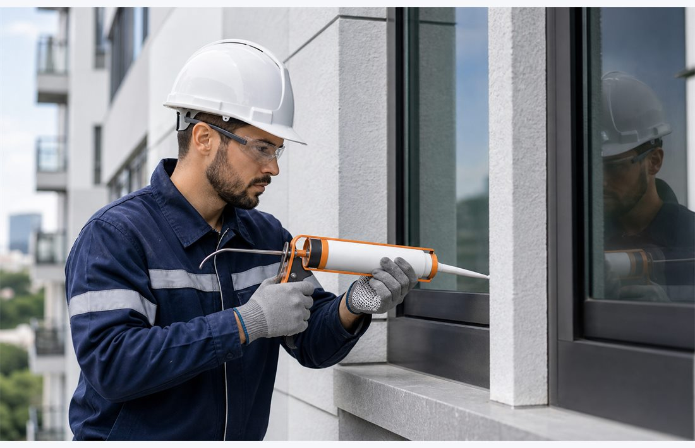
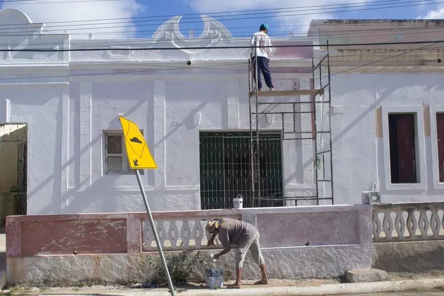
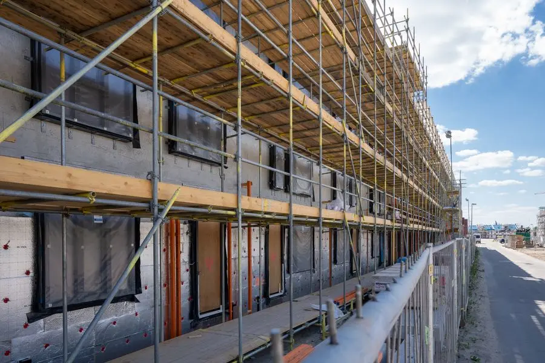

Pintura, lavagem e manutenção predial
Especialistas em pintura, lavagem e manutenção predial
Soluções completas para conservação, valorização e segurança do seu imóvel.

Atendimento técnico
Diagnóstico, planejamento e execução com foco no cuidado do imóvel.
Sobre a empresa
Conservação predial com acabamento, segurança e responsabilidade
A JM & Obras é especializada em pintura predial, lavagem de fachadas e manutenção predial, oferecendo soluções para condomínios, empresas, comércios e imóveis residenciais.
Atuamos com planejamento, equipe qualificada e atenção aos detalhes para entregar serviços duráveis, limpos e alinhados às necessidades de cada cliente.
Vistorias e orientações técnicas
Execução organizada e segura
Suporte do orçamento à entrega
Soluções
Serviços para valorizar e proteger seu patrimônio
Atendimento para condomínios, empresas, comércios e imóveis residenciais em São Paulo e região.
Pintura Predial
Pintura externa e interna com preparo de superfície, acabamento técnico e materiais adequados.
Conhecer o serviço
Lavagem Predial
Limpeza de fachadas, muros e áreas externas para remover sujeiras, manchas e resíduos.
Conhecer o serviçoManutenção Predial
Correções, conservação e suporte preventivo para manter o imóvel seguro e funcional.
Conhecer o serviço
Manutenção Geral
Serviços gerais para imóveis residenciais, comerciais e industriais com atendimento ágil.
Conhecer o serviço
Reformas
Reparos e melhorias com planejamento, organização de etapas e acabamento profissional.
Conhecer o serviço
Conservação de Fachadas
Cuidados preventivos para prolongar a vida útil, aparência e segurança das fachadas.
Conhecer o serviçoReferências visuais
Cuidados que transformam o imóvel
Conheça exemplos visuais de reforma e conservação de fachadas. As fotos abaixo são ilustrativas, de banco de imagens, e não representam obras executadas pela JM & Obras.

Renovação de fachadas
Uma avaliação do acabamento ajuda a definir o preparo e os cuidados necessários para cada superfície.
Conhecer pintura predialFoto: Felipe Queiroz / Pexels
Planejamento da conservação
O acesso à fachada e as condições do imóvel fazem parte da definição do escopo do serviço.
Conhecer conservação de fachadasFoto: Mike van Schoonderwalt / PexelsDiferenciais
Por que escolher a JM & Obras?
Uma operação próxima, transparente e focada em preservar o valor do seu imóvel.
Equipe qualificada
Profissionais preparados para diferentes demandas de conservação e manutenção.
Segurança na execução
Processos orientados para organização, cuidado com áreas comuns e proteção da equipe.
Materiais de qualidade
Uso de produtos e insumos adequados para cada tipo de superfície e necessidade.
Atendimento personalizado
Cada orçamento considera o contexto do imóvel, prioridades e prazos do cliente.
Compromisso com prazos
Planejamento de etapas para reduzir transtornos e manter a obra sob controle.
Orçamento transparente
Propostas claras, com escopo definido e comunicação direta antes da execução.
Orçamento rápido
Seu patrimônio merece cuidado profissional
Blog
Conteúdos para cuidar melhor do seu imóvel
Conservação
Como conservar a fachada do condomínio
Rotinas simples de inspeção e manutenção ajudam a preservar acabamento, segurança e valor do prédio.
Ler artigoPintura
Quando fazer pintura predial
Sinais como manchas, descascamentos e fissuras indicam que a fachada precisa de avaliação técnica.
Ler artigo
Lavagem
Benefícios da lavagem predial periódica
A limpeza programada melhora a aparência, reduz acúmulo de sujeira e facilita a manutenção preventiva.
Ler artigoDúvidas frequentes
Como solicitar seu orçamento
Quais informações devo enviar?
Informe o serviço, a cidade ou bairro, o tipo de imóvel e as áreas que precisam de atendimento. Fotos ajudam na conversa inicial.
O atendimento é em São Paulo?
Atendemos São Paulo e região. Consulte a disponibilidade para a localização do seu imóvel pelo WhatsApp.
Como são definidos o preço e o prazo?
O orçamento considera o escopo, as condições do imóvel, os materiais e o acesso às áreas. O prazo é combinado conforme a proposta.
Contato
Solicite uma avaliação para seu imóvel
Fale com a JM & Obras para receber atendimento personalizado em pintura, lavagem, reforma e manutenção predial.
Chamar no WhatsApp